Every meter impacts the circuit it is measuring to some extent, just as any tire-pressure gauge changes the measured tire pressure slightly as some air is let out to operate the gauge. While some impact is inevitable, it can be minimized through good meter design.
Since voltmeters are always connected in parallel with the component or components under test, any current through the voltmeter will contribute to the overall current in the tested circuit, potentially affecting the voltage being measured. A perfect voltmeter has infinite resistance so that it draws no current from the circuit under test. However, perfect voltmeters only exist in the pages of textbooks, not in real life! Take the following voltage divider circuit in Figure 1 as an extreme example of how a realistic voltmeter might impact the circuit its measuring.
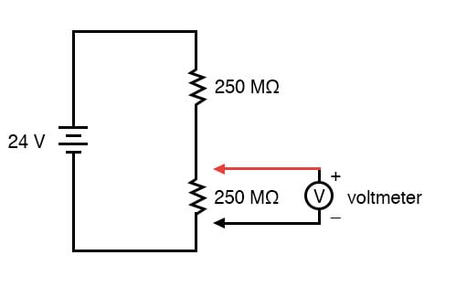
With no voltmeter connected to the circuit, there should be exactly 12 V across each 250 MΩ resistor in the series circuit, the two equal-value resistors dividing the total voltage (24 V) exactly in half. However, if the voltmeter in question has a lead-to-lead resistance of 10 MΩ (a common amount for a modern digital voltmeter), its resistance will create a parallel subcircuit with the lower resistor of the divider when connected, shown in Figure 2.
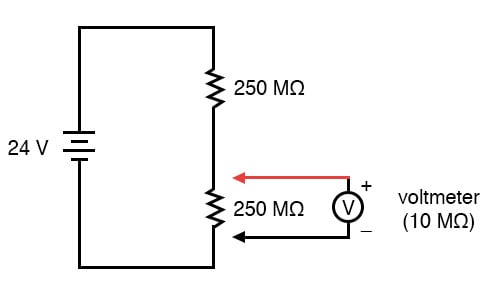
This effectively reduces the lower resistance from 250 MΩ to 9.615 MΩ (250 MΩ and 10 MΩ in parallel), drastically altering voltage drops in the circuit. The lower resistor will now have far less voltage across it than before, and the upper resistor far more (Figure 3).
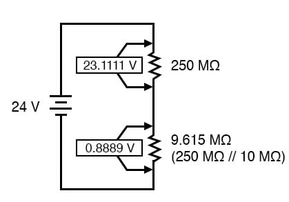
A voltage divider with resistance values of 250 MΩ and 9.615 MΩ will divide 24 V into portions of 23.1111 V and 0.8889 V, respectively. Since the voltmeter is part of that 9.615 MΩ resistance, that is what it will indicate: 0.8889 V.
Now, the voltmeter can only indicate the voltage it is connected across. It has no way of “knowing” there was a potential of 12 V dropped across the lower 250 MΩ resistor before it was connected across it. The very act of connecting the voltmeter to the circuit makes it part of the circuit, and the voltmeter’s own resistance alters the resistance ratio of the voltage divider circuit, consequently affecting the voltage being measured.
Imagine using a tire pressure gauge that took so great a volume of air to operate that it would deflate any tire it was connected to. The amount of air consumed by the pressure gauge in the act of measurement is analogous to the current taken by the voltmeter movement to move the needle. The less air a pressure gauge requires to operate, the less it will deflate the tire under test. The less current drawn by a voltmeter to actuate the needle, the less it will burden the circuit under test.
This effect is called loading, and it is present to some degree in every instance of voltmeter usage. The scenario shown here is worst-case, with a voltmeter resistance substantially lower than the resistances of the divider resistors. But there always will be some degree of loading, causing the meter to indicate less than the true voltage with no meter connected. Obviously, the higher the voltmeter resistance, the less loading of the circuit under test, and that is why an ideal voltmeter has infinite internal resistance.
Voltmeters with electromechanical movements are typically given ratings in “ohms per volt” of range to designate the amount of circuit impact created by the current draw of the movement. Because such meters rely on different values of multiplier resistors to give different measurement ranges, their lead-to-lead resistances will change depending on what range they’re set to. Digital voltmeters, on the other hand, often exhibit a constant resistance across their test leads regardless of range setting (but not always!), and as such, are usually rated simply in ohms of input resistance rather than “ohms per volt” sensitivity.
What “ohms per volt” means is how many ohms of lead-to-lead resistance for every volt of range setting on the selector switch. Let’s take our example voltmeter from the last section as an example shown in Figure 4.
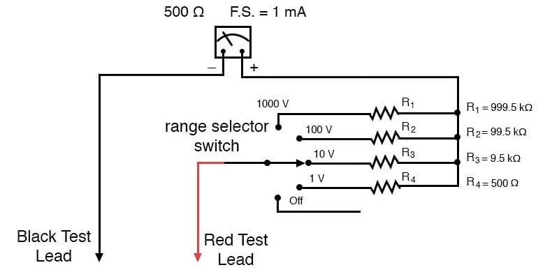
On the 1000-volt scale, the total resistance is 1 MΩ (999.5 kΩ + 500 Ω), giving 1,000,000 Ω per 1000 V of range, or 1000 ohms per V (1 kΩ/V). This ohms-per-volt “sensitivity” rating remains constant for any range of this meter. This can be seen using the equations in Figure 5.
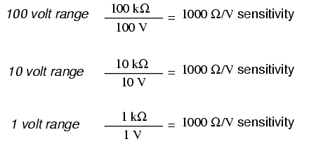
The astute observer will notice that the ohms-per-volt rating of any meter is determined by a single factor: the full-scale current of the movement, in this case, 1 mA. “Ohms per volt” is the mathematical reciprocal of “volts per ohm,” which is defined by Ohm’s Law as current (I=E/R). Consequently, the full-scale current of the movement dictates the Ω/volt sensitivity of the meter, regardless of what ranges the designer equips it with through multiplier resistors. In this case, the meter movement’s full-scale current rating of 1 mA gives it a voltmeter sensitivity of 1000 Ω/V regardless of how we range it with multiplier resistors.
To minimize the loading of a voltmeter on any circuit, the designer must seek to minimize the current draw of its movement. This can be accomplished by re-designing the movement itself for maximum sensitivity (less current is required for full-scale deflection), but the tradeoff here is typically ruggedness: a more sensitive movement tends to be more fragile.
Another approach is to electronically boost the current sent to the movement so that very little current needs to be drawn from the circuit under test. This special electronic circuit is known as an amplifier, and the voltmeter thus constructed is an amplified voltmeter (Figure 6).
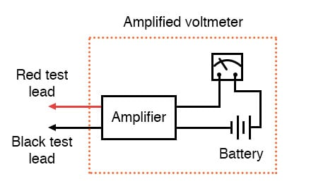
The internal workings of an amplifier are too complex to be discussed at this point but suffice it to say that the circuit allows the measured voltage to control how much battery current is sent to the meter movement. Thus, the movement’s current needs are supplied by a battery internal to the voltmeter and not by the circuit under test. The amplifier still loads the circuit under test to some degree, but generally hundreds or thousands of times less than the meter movement would by itself.
Before the advent of semiconductors known as “field-effect transistors,” vacuum tubes were used as amplifying devices to perform this boosting. Such vacuum-tube voltmeters, or (VTVMs) were once very popular instruments for electronic tests and measurements. Figure 7 shows a photograph of a very old VTVM with the vacuum tube exposed!
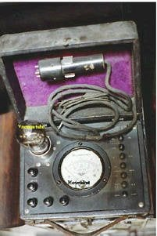
Now, solid-state transistor amplifier circuits accomplish the same task in digital meter designs. While this approach (using an amplifier to boost the measured signal current) works well, it vastly complicates the design of the meter, making it nearly impossible for the beginning electronics student to comprehend its internal workings.
A final and ingenious solution to the problem of voltmeter loading is that of the potentiometric or null-balance instrument. It requires no advanced (electronic) circuitry or sensitive devices like transistors or vacuum tubes, but it does require greater technician involvement and skill. In a potentiometric instrument, a precision adjustable voltage source is compared against the measured voltage, and a sensitive device called a null detector is used to indicate when the two voltages are equal.
In some circuit designs, a precision potentiometer is used to provide the adjustable voltage, thus the label potentiometric. When the voltages are equal, there will be zero current drawn from the circuit under test, and thus the measured voltage should be unaffected. It is easy to show how this works with our last example, the high-resistance voltage divider circuit (Figure 8).
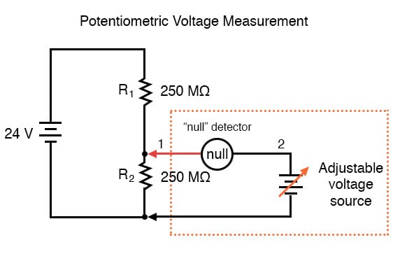
The “null detector” is a sensitive device capable of indicating the presence of very small voltages. If an electromechanical meter movement is used as the null detector, it will have a spring-centered needle that can deflect in either direction so as to be useful for indicating a voltage of either polarity. As the purpose of a null detector is to accurately indicate a condition of zero voltage rather than to indicate any specific (nonzero) quantity as a normal voltmeter would, the scale of the instrument used is irrelevant. Null detectors are typically designed to be as sensitive as possible in order to more precisely indicate a “null” or “balance” (zero voltage) condition.
An extremely simple type of null detector is a set of audio headphones, the speakers within acting as a kind of meter movement. When a DC voltage is initially applied to a speaker, the resulting current through it will move the speaker cone and produce an audible “click.” Another “click” sound will be heard when the DC source is disconnected. Building on this principle, a sensitive null detector may be made from nothing more than wired headphones and a momentary contact switch. Figure 9 shows an example of this.
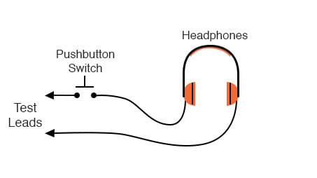
If a set of “8 ohm” headphones are used for this purpose, its sensitivity may be greatly increased by connecting it to a device called a transformer. The transformer exploits principles of electromagnetism to “transform” the voltage and current levels of electrical energy pulses. In this case, the type of transformer used is a step-down transformer, and it converts low-current pulses (created by closing and opening the pushbutton switch while connected to a small voltage source) into higher-current pulses to more efficiently drive the speaker cones inside the headphones.
An “audio output” transformer with an impedance ratio of 1000:8 is ideal for this purpose. The transformer also increases detector sensitivity by accumulating the energy of a low-current signal in a magnetic field for sudden release into the headphone speakers when the switch is opened (Figure 10). Thus, it will produce louder “clicks” for detecting smaller signals.
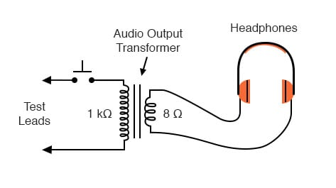
Connected to the potentiometric circuit as a null detector, the switch/transformer/headphone arrangement is used as such in Figure 11.
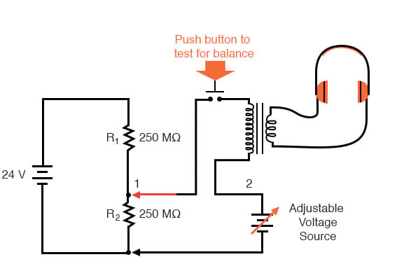
The purpose of any null detector is to act like a laboratory balance scale, indicating when the two voltages are equal (absence of voltage between points 1 and 2) and nothing more. The laboratory scale balance beam doesn’t actually weigh anything; rather, it simply indicates equality between the unknown mass and the pile of standard (calibrated) masses (Figure 12).
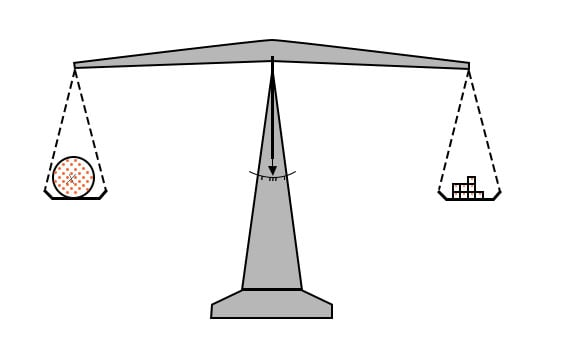
Likewise, the null detector simply indicates when the voltage between points 1 and 2 are equal, which (according to Kirchhoff’s Voltage Law) will be when the adjustable voltage source (the battery symbol with a diagonal arrow going through it) is precisely equal in voltage to the drop across R2.
To operate this instrument, the technician would manually adjust the output of the precision voltage source until the null detector indicated exactly zero. If using audio headphones as the null detector, the technician would repeatedly press and release the pushbutton switch, listening for silence to indicate that the circuit was “balanced. Then they would note the source voltage as indicated by a voltmeter connected across the precision voltage source, that indication being representative of the voltage across the lower 250 MΩ resistor (Figure 13).
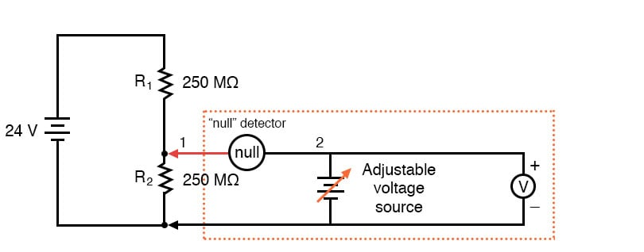
The voltmeter used to directly measure the precision source need not have an extremely high Ω/V sensitivity because the source will supply all the current it needs to operate. So long as there is zero voltage across the null detector, there will be zero current between points 1 and 2, equating to no loading of the divider circuit under test.
It is worth reiterating the fact that this method, properly executed, places almost zero loads upon the measured circuit. Ideally, it places absolutely no load on the tested circuit, but to achieve this ideal goal, the null detector would have to have absolutely zero voltage across it, which would require an infinitely sensitive null meter and a perfect balance of voltage from the adjustable voltage source.
However, despite its practical inability to achieve absolute zero loading, a potentiometric circuit is still an excellent technique for measuring voltage in high-resistance circuits. And unlike the electronic amplifier solution, which solves the problem with advanced technology, the potentiometric method achieves a hypothetically perfect solution by exploiting a fundamental law of electricity, Kirchhoff's voltage law (KVL).
REVIEW: